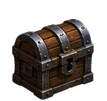
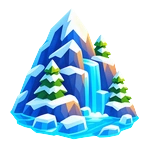
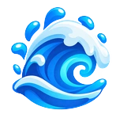
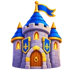
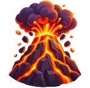
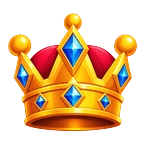

Tap DASH to charge forward and smash enemies off the ice
🦘
Tap SAUT pour sauter par-dessus les ennemis — recharge après atterrissage
🦅
Certains casques rares débloquent le VOL ou la NAGE — DASH pour explorer et découvrir ce qui se cache au-delà…
⚡
Grab POWER-UPS on the ice then tap the slots to use them
☠️
The ice SHRINKS every 20s — last skater standing wins!
🎮
💥 MODE GHOST
👻
REVENIR D'ENTRE LES MORTS — Quand tu tombes, tape frénétiquement l'écran pour remonter à la surface ! Si tu es assez rapide, tu réintègres la partie. ⚠ Une seule chance par partie — ne la gaspille pas !
🎮 MODES DE JEU
🥊
DUEL — Affronte un adversaire en 1 contre 1, en local sur le même appareil.
🌐
DUEL EN LIGNE — Même principe que le Duel, mais à distance : entre un code de salon pour affronter un ami en ligne.
🎉
FFA — Bataille royale en ligne de 2 à 4 joueurs, via un code de salon : dernier debout gagne !
🌍 STRUCTURE DU JEU
😈
Chaque monde a ses propres ennemis et son BOSS RACKI. Bat Racki pour débloquer le monde suivant — c'est la colonne vertébrale de ta progression !
🪙 PROGRESSION
🏒
Ramasse les 🪙 PIÈCES qui traînent sur la glace et dans le décor en cours de partie ! En fin de round, tu gagnes aussi des JETONS DE GLACE selon tes performances (éliminations, survie, victoire). Échange tout ça à L'ARMURERIE pour débloquer skins, équipements et bonus !
🐟 ASTUCES AVANCÉES
🕳️
SECRET — Tape 5 fois de suite sur certaines zones de l'écran : un trou de pêcheur s'ouvre dans la glace, portail vers un monde alternatif… ✦ explore toute la surface ✦
🏝️
✦ certaines combinaisons de touches ouvrent des passages secrets ✦
🗝️ CHEAT CODES DÉBLOQUÉS

💰 COFFRE AU TRÉSOR !
🗺️
🎮 VUE DOS
☰ PAUSE
Que veux-tu faire ?
SURVIVANTS
10
PROCHAINE FISSURE
❄️20
⬙ GLACE ENTIÈRE
🔥 RAGE
💨DASHB
–OBJET 1X
–OBJET 2Y
🦘
SAUT
A
LAST MAN SKATING
👑 CHAMPION ULTIME
THIN ICE SMASH · SURVIVE OR SPLASH
🏒 Choisis ton patineur
ELOAN
🎯 Sniper
#96
MYLOH
💪 Grinder
#17
EYLEEN
🎲 Enforcer
#11
ROMY
🧠 Clever
#1
🔒
GAGNE CHÂTEAU
KRISTEN
💀 Killer
#56
1

🏔️
LAC POLAIRE
🛸
GLACE SPATIALE
🌸
JAPON
🔒

🌊
FOND MARIN
Gagne GLACE SPATIALE ou PUB
🔒
🛕
HIMALAYA
Gagne JAPON ou PUB
🔒
🎃
HALLOWEEN
Gagne FOND MARIN ou PUB
🔒

🏯
FORTERESSE
Gagne HALLOWEEN ou PUB
🔒

🌋
VOLCAN
🔥 10 000 pts armurerie
🔒

👑
ARENE FINALE
Bats Racki dans tous les mondes
🏅 Meilleur rang
—
⭐ RECORD!
💥 Max élims en 1 partie
—
⭐ RECORD!
🎯 OBJECTIF SESSION
—
—
✏️ PERSONNALISER KRISTEN
NOM (7 max)
TAILLE— 53%
NUMÉRO
LARGEUR
⚖️ Moyen
CHEVEUX
💈 Court
EXPRESSION
😊 Sourire
TEINT DE PEAU
COULEUR CHEVEUX
COULEUR YEUX
COULEUR JERSEY
COULEUR CASQUE
COULEUR PATINS
⚙️ RÉGLAGES
👤 PSEUDO
🕹️ CÔTÉ JOYSTICK
🔄 SAUT / DASH
🎵 MUSIQUE
100%
🔊 EFFETS SONORES
100%
💬 COMMENTATEUR
📳 VIBRATIONS
🎯 SENSIBILITÉ JOYSTICK
NORMALE
🔘 TAILLE DES BOUTONS
MOYEN
👥 DENSITÉ IA
ÉLEVÉE
🎯 DIFFICULTÉ IA
EXPERT
⭐ NOTER LE JEU
RETIRER PUBS
🔗 LIER MON COMPTE
🔗 LIER TON COMPTE
Génère un code sur cet appareil, entre-le sur l'autre pour fusionner ta progression.
🎖️ RANG DE MAÎTRISE
1
Débutant
0 / 100 XP
+5 XP / élimination · +50 XP / victoire · +15 XP médaille 🥇 · +7 XP médaille 🥈 · +20 XP 1er boss de monde battu
🎁 CARTES
🔥 Série — touche pour voir
🎯 MISSIONS DU JOUR
De nouvelles missions arrivent chaque jour !
🔥 SÉRIE DE CONNEXION
Reviens chaque jour pour des récompenses croissantes !
🔔
🔔 Ne perds jamais ta série !
PLAYER #96
ELOAN
LEGENDARY
↔ TOURNER
⛑️STANDARDDe série🏒BOISLa classique
⚡ SPEED
👊 POWER
⛸ AGILITY
🛡 ENDURANCE
🍀 LUCK
❄️
SPECIAL ABILITY
ICE STORM
📺 REGARDE LA PUB POUR DÉBLOQUER KRISTEN #56
(toutes les 3 parties + post-déblocage monde) ── -->